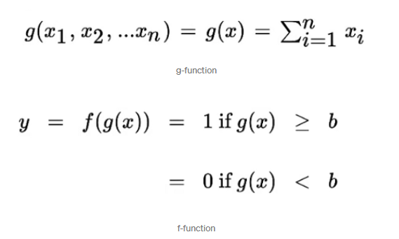
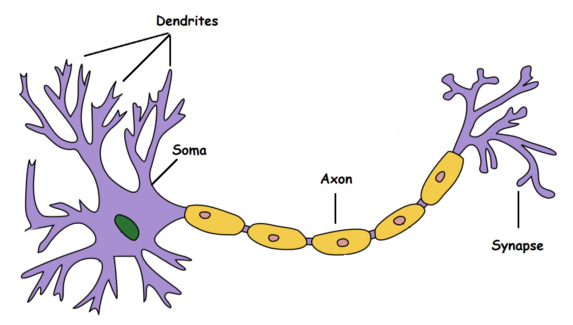

FAQs
Define and differentiate between learning and generalization for ANN.
- The ability to generalize is the major advantage of a neural network. It is said that a trained net could classify data from the same class as the learning data that it has never seen before. In real world applications developers normally have only small part of all possible patterns for the generation of a neural net.
- The basic focus of neural network is how to adjust the weights of the links to get the desired system behavior, hence how to make neural network learn.
- Firstly, the ability to generalize is making assumptions for the system, like how would it react when the data is input, this is done the basis of training given to the system. On the other hand, learning is to do and adapt the change in itself as and when there is a change in environment.
- Secondly, every generalised system is defined to go under training but it is not necessary that every system that undergoes training can be generalised.
- Thirdly, learning happens at very initial stage of neural network, generalization is a later stage in the process or one can say it happens when the system has fixed the training path.
Taking an appropriate example, discuss application of ANN for pattern recognition.
- Pattern recognition is a very elucidated topic in neural network. It is the automated discovery of any kind of combination or pattern in a training set.
- In simple terms, where a pattern for the given dataset is detected and that recognised pattern should be helpful for optimizing output of the neural netowrk.
- In neural networks, pattern recognition is divided into two types:
Classification
Clustering. These two types are two different applications in artificial neural network.
- Classification is a supervised learning application whose target value is a finite set of classes.
For instance: Classification is commonly used in the financial sector. In the era of online transactions where the use of cash has decreased markedly, it is necessary to determine whether movements made through cards are safe. Entities can classify transaction as correct or fradulent using historical data on customer behaviour to detect fraud very accurately.
- Clustering is an unsupervised learning application, it means this algo. only have one set of input data(not labelled), about which we must obtain information, without previously knowing what the output will be. The output obtained is not very precise as compared to classification since the input data is not labelled.
For instance: Netflix recommendation system using clustering for the users to show movies/tv-series according the users choice. The netfliz uses these clusters to refine its knowledge of the tastes viewers and thus make better decisions in the creation of new original series.
How RBF network is different from MLP? Describe RBF network as function approximator.
- Multilayer Perceptron (MLP) uses dot products (between inpus and weights) and sigmoidal activation functions (or other monotonic functions such as ReLU) as for all layers. On the other hand, radial basis function (RBF) uses Euclidean distances (between inputs and weights, which can be viewed as centers) and gaussian activation functions (which could be multivariate), which makes neurons more locally sensitive.
- The training is usually done through backpropagation for all layers (which can be as many as you want). RBFs may use backpropagation for learning, or hybrid approaches with unsupervised learning in the hidden layer (but they usually have just 1 hidden layer).
- The hidden layer of RBF is different from MLP. Each hidden unit act as a point in input space and activation/output for any instance depends on the distance between that point(Hidden Unit) and instance(also a point in space).
- In general, function approximation is a technique for estimating an unknown underlying function using historical or available observations from the domain. RBF network learns to approximate a function.
- As we know RBF network is a fast training neural network, for both supervised or unsupervised data sets a function which could give the relationship between input and output is demanded to be found. In RBF networks, the input data is computed with distance between them and weights in the space. This computation helps the network to find a function which can approximately give relationship between input data and output data.
Define MP model of neuron and discuss how it has been derived from biological neurons.
- MP model neuron also known as McCullock-Pitts model neuron, has made the key contribution in the field of ann. MP neuron as the name suggests is inspired by Neurons of the human brain.
- To put in simple, MP neurons takes input sample, aggregates it and provide an output signal based on the threshold.
- Considering MP model of neuron as model function, we can say that it is of two parts. Function 'g' aggreagated the input and function 'f' takes the decision based on this aggregation.
- Inputs can be excitatory or inhibitatory. The more excitatory signals a neuron receives, the closer the total will be to the neuron's threshold, and so the closer the neuron will be to sending its output signal.
- On the other hand, inhibitory signals have the effect of inhibiting the neuron from sending a signal. When a neuron receives an inhibitory signal, it becomes less excited, and so it takes more excitatory signals to reach the neuron's threshold.
- 'g' is the sum of all the input and 'f' outputs '1' or '0' based on threshold.

- threshold 'b' is the only parameter in this case, which decides whether the output should be '0' or '1'. This is called the thresholding logic.
The inputs and outputs are only boolean i.e., neither the inputs nor the output is real.

- Dendrite: receives signals from other neurons.
Soma: Processes the information.
Axon: Transmits the output of this neuron.
Synapse: Point of connection to other neurons.
- Basically, a neuron takes an input singnal (dendrite), processes it like the CPU (soma), passes the output through a cable like structure to other connected neurons (axon to synapse to other neuron's dendrite). now, this might be biologically inaccurate as there is a lot more going on out there but on a higher level, this is whwat is going on with a neuron in out brain -- takes an input, processes it, throws out an output. The same is being done by the MP model of a neuron. It takes input, aggregates the input, and throws an output based on the threshold.
For a multi-layer feedforward network, discuss how you will decide the number of hidden layers and number of neuron in each layer.
- In general, one hidden layer is sufficient for the large majority of problems. There is always a dilemma how many hidden layers one should choose. The situations in which performance improves with a second (or third etc.) hidden layer are very few. It can also be visa versa. So no one can analytically calculate the number of layers or the number of nodes to use per layer in an ann to address a specific real-world predictive modeling problem.
- If you are likely to be the first person to attempt to address your specific problem with a neural network. No one has solved it before you. Therefore, no one can tell you the answer of how to configure the network.
- There are some empirically-derived rules-of-thumb, of these, the most commonly relied on is 'the optimal size of the hidden layer is usually between the size of the input and size of the output layers.'
- For most of the problems in ann including multi-layer feed-forward network, the hidden layer configuration uses just two rules:
(i) the number of hidden layers equals one
(ii) the number of neurons in that layer is the mean of the neurons in the input and output layers.